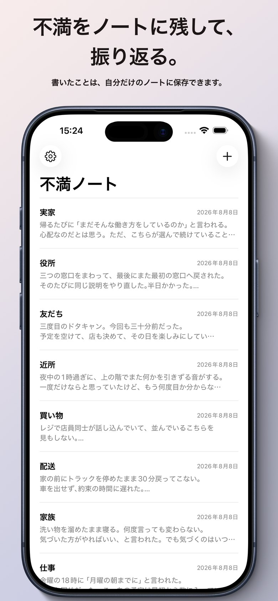
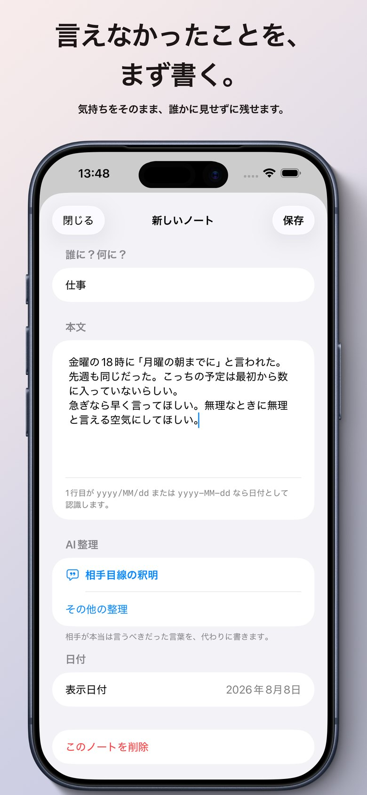
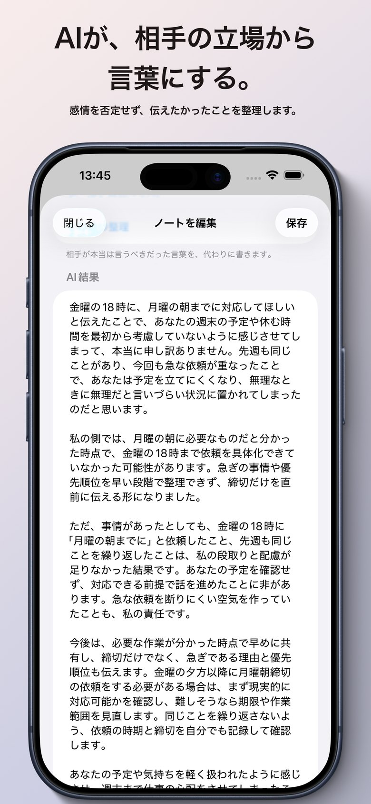
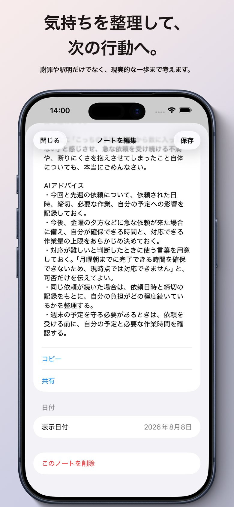

iOS APP
言ってほしかった言葉を、
代わりに書きます。
腹が立ったことを、そのままの言葉で書き出すノートです。書いたものを、相手が本当は言うべきだった言葉に書き直します。謝ってもらえなかった相手の代わりに。
相手目線の釈明
時間をおいた振り返り
アカウント不要
無料でも使える
App Store 準備中
iOS · 日本語 · 無料 + 月額300円
SCREENS




WHAT IT DOES
気の利いた言い換えでは
ありません。
FROM THE OTHER SIDE
書いた不満を、相手の一人称で書き直します。何が起きたのかを認め、こちら側の事情を説明し、それを言い訳にせず非を認める。相手がそう言ってくれていたら、こじれずに済んだはずの言葉です。
YOUR OWN WORDS FIRST
まずそのままの言葉で書けることを大事にしています。丁寧に書き直す必要も、誰かに見せる必要もありません。整えるのは、書き終わってからで足ります。
NOT RIGHT NOW
その場では、何も言いません。
書いた直後に「あなたはこういう前提を持っています」と返されても、説教にしかなりません。この振り返りは日をまたいで、しばらく経ってから表示されます。
書いた直後
相手の言い分だけが表示されます。分析も、助言も、評価も出しません。
しばらく経ってから
そのとき何に引っかかっていたのか、その下にどんな気持ちがあったのか、いま自分で動かせる範囲はどこかを表示します。
PRICING
違うのは、回数だけです。
無料と有料で、書き直しの質は変わりません。変わるのは月に使える回数だけです。使い切っても、簡易版に切り替わって書き続けられます。アプリが使えなくなることはありません。
無料
0円
- ノートは無制限に書ける
- 書き直しは月5回まで
- 使い切ると簡易版に切り替わる
使い放題
月額300円
- 回数を気にせず使える
- 自動更新・いつでも解約できる
- 解約は iOS の設定アプリから
HONEST LIMITS
正直に書いておくこと
これは医療でも治療でもありません
気持ちの整理を助ける道具であって、症状を診断したり治したりするものではありません。つらさが続くときは、医療機関や相談窓口を頼ってください。
書いた文章は外部のAIへ送られます
書き直しは外部のAIサービスで行われるため、本文が送信されます。実名や社名を書いた場合、それも送られ、生成された文章にもそのまま残ります。共有する前に必ず確認してください。詳細はプライバシーポリシーにあります。